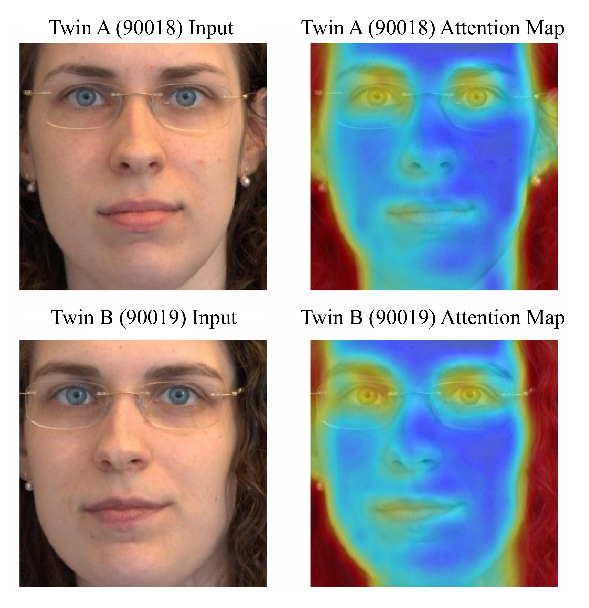
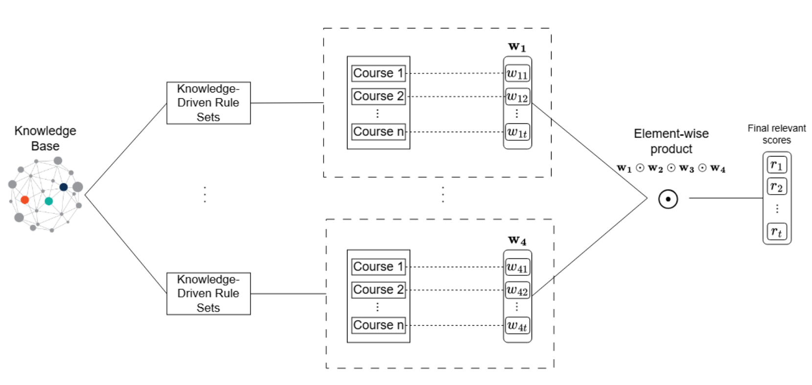
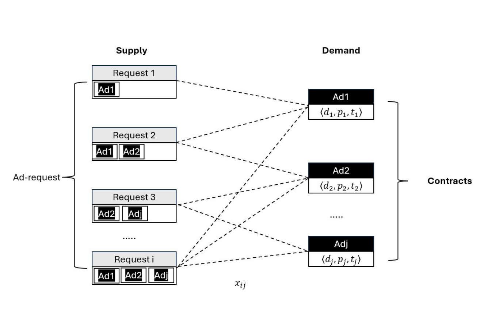
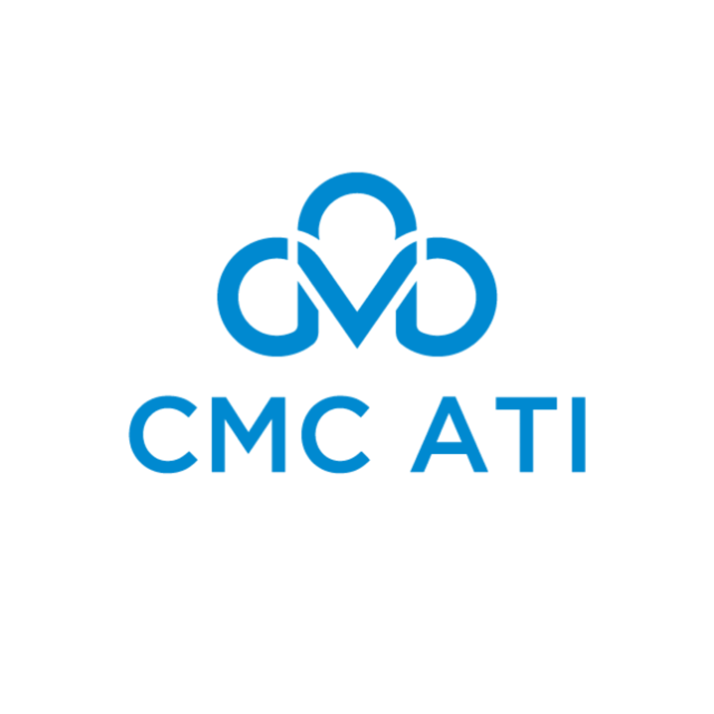

|
Hoang-Nhat NguyenNguyễn Hoàng NhậtPhD Student hoangnha001 [at] e.ntu.edu.sg |
Biography
I'm a PhD student at MMLab, Nanyang Technological University (NTU), Singapore, where I am supervised by Prof. Chen Change Loy.
Previously, I spent nearly two years as a Research Engineer at Samsung R&D Vietnam. Before that, I served as a Research Assistant at CMC Research Institute, under the supervision of Assoc. Prof. Nguyen Thi Ngoc Anh, who was also my undergraduate thesis advisor at Hanoi University of Science and Technology.
You can call me Nhật, Nhat or Leo.
Research Interests
I am interested in Computer Vision, Multimodal Learning and Representation Learning.
News
Publications
|  |
AHAN: Asymmetric Hierarchical Attention Network for Identical Twin Face Verification
Hoang-Nhat Nguyen AAAI, 2026 paper | poster Proposed an architecture that achieves 92.3% identical twin facial verification accuracy by augmenting ViT self-attention with hierarchical cross-attention over semantic facial regions. |
|  |
A Knowledge Graph-Based Framework for Personalized Course Recommendations in Higher Education
Thi-Hoa-Hue-Nguyen, Hoang-Nhat Nguyen ICAIBD, 2025 paper Proposed a knowledge graph-based framework for personalized course recommendations in higher education. |
|  |
Integrating Computational Advertising with Guaranteed Display for Enhanced Performance in Wi-Fi Marketing
Ngoc Bach Pham, Linh Nguyen Duy, Bao Bui Quoc and Hoang-Nhat Nguyen RICE, 2025 paper Proposed a framework for integrating computational advertising with guaranteed display for enhanced performance in Wi-Fi marketing. |
Experiences

|
Research Engineer | Samsung R&D Vietnam March 2024 – December 2025 |
|  |
Research Assistant | CMC Research Institute October 2023 – March 2024 |
|
AI Engineer Intern | Varmeta November 2023 – March 2024 |
Education

|
Nanyang Technological University, Singapore PhD in Computer Science January 2026 – Present | College of Computing and Data Science |

|
Hanoi University of Science and Technology, Vietnam B.E. in Mathematics and Informatics (Talented Program) October 2020 – August 2024 | Excellent degree |
Honors & Awards
- NTU PhD Research Scholarship, 2025
- Samsung Talent Program Scholarship, 2024
- HUST Study Encouragement Scholarship, 2022, 2024
- Top 4 Finalist at HUST - SoICT Hackathon, 2024
- First Prize Winner at SAMI AI Challenge, 2023
Miscellanea
Services |
Conference Reviewer: AAAI 2026, IJCAI 2025
Journal Reviewer: KBS, EAAI |
Activities |
Head of News Team, Ha Tinh High School for Gifted Students Media Club, 2019 |
Hobbies |
In my free time, I play football ⚽, ping pong 🏓, guitar 🎸, drawing 🎨, photography 📸, and videography 🎥. |